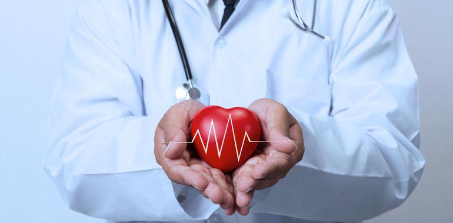
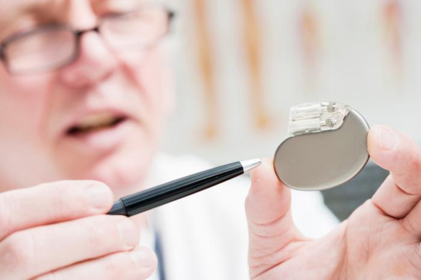
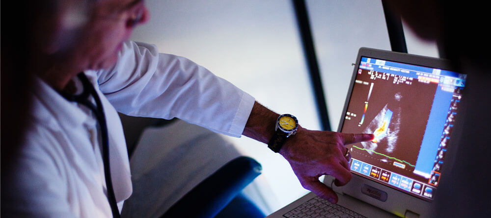

Cardiology and Intensive Care
What is cardiology ?
Cardiology is the study and treatment of disorders of the heart and the blood vessels. A person with heart disease or cardiovascular disease may be referred to a cardiologist.
Cardiology is a branch of internal medicine. A cardiologist is not the same as a cardiac surgeon. A cardiac surgeon opens the chest and performs heart surgery.
A cardiologist specializes in diagnosing and treating diseases of the cardiovascular system. The cardiologist will carry out tests, and they may perform some procedures, such as heart catheterizations, angioplasty, or inserting a pacemaker.

What does cardiology involve?
A cardiologist will review a patient’s medical history and carry out a physical examination.
They may check the person’s weight, heart, lungs, blood pressure, and blood vessels, and carry out some tests.
An interventional cardiologist may carry out procedures such as angioplasties, stenting, valvuloplasties, congenital heart defect corrections, and coronary thrombectomies.
Tests
Electrocardiogram (ECG or EKG):
this records the electrical activity of the heart.
Ambulatory ECG:
this records heart rhythms while the person carries out exercise or their regular activities. Small metal electrodes are stuck on to the chest, and these are connected by wires to a Holter monitor, which records the rhythms.
An exercise test, or stress test: this shows the changes of heart rhythm when resting and exercising. It measures the performance and limitations of the heart.
Echocardiogram:
this provides an ultrasound picture that shows the structure of the heart chambers and surrounding areas, and it can show how well the heart is working.
Echocardiography can measure how well the heart is pumping blood, known as cardiac output. It can detect inflammation around the heart, known as pericarditis. It can also identify structural abnormalities or infections of the heart valves.
Cardiac catheterization:
a small tube in or near the heart collects data and may help relieve a blockage. It can take pictures and check the functioning of the heart and the electrical system. Catheter-based techniques with fluoroscopy can be used to treat congenital cardiac, valvular, and coronary artery diseases.
cardiology:
nuclear imaging techniques use radioactive materials to study cardiovascular disorders and diseases in a noninvasive way.
Examples are infarction imaging, single-photon-emission computed tomography (SPECT), planar imaging, and myocardial perfusion imaging.
Cardiac electrophysiology
Cardiac electrophysiology is a subspecialty of cardiology.
The physician looks at how electric currents inside the heart muscle tissue work, how the current spreads, and what the pattern of the currents mean.
Electrophysiology study (EPS) of the heart:
in this test, a catheter is threaded into a vein at the top of the leg. Guided under fluoroscopy, it makes its way to the heart. The catheter measures the electrical signals within the heart.
Do I need a referral to see a cardiologist?
It depends. Some insurance plans may require you to get a referral from your primary care provider, so be sure to check with your insurance company for details. This can help you avoid the unwelcome surprise of a higher cost than you expected when visiting a cardiologist. It’s usually more expensive to see a specialist like a cardiologist than your primary care provider, but following your insurance company’s rules saves you money.
What are some different types of cardiologists?
Cardiology is a vast medical branch that offers many subspecialties. The American Board of Internal Medicine (ABIM) offers certification in four of these areas:
Advanced heart failure and transplant cardiology:
Physicians who practice this cardiovascular subspecialty manage advanced heart failure cases and transplant patients. These cardiologists implement electrophysiologic and hemodynamic support devices and perform surgical procedures. They sometimes act as consultants for other physicians managing patients with significant heart failure. Obtaining certification in this field requires an additional year of training following a cardiovascular disease fellowship.
Adult congenital heart disease:
Physicians who focus on adult congenital heart disease work with patients who have one or more defects in their heart or blood vessel structures. They often need to coordinate with numerous other providers to provide long-term care. Becoming certified in this subspecialty entails completing two years of additional fellowship training upon completing a cardiovascular disease fellowship.
Clinical cardiac electrophysiology:
Physicians who subspecialize in clinical cardiac electrophysiology focus on managing complex cardiac rhythm disorders. These specialists perform both noninvasive and invasive diagnostic procedures. They treat arrhythmias by prescribing medication, implanting electrical devices, and leveraging other international techniques. To become certified in this subspecialty, physicians must complete an additional one-year fellowship after they’ve finished their cardiovascular disease fellowship.
Interventional cardiology:
Interventional cardiology involves specialized imaging and diagnostic techniques to evaluate different areas of the cardiovascular system. Many of these procedures are performed using a catheter. Doctors specializing in interventional cardiology spend complete an additional fellowship following their cardiovascular disease training.
Advanced cardiovascular imaging:
Cardiologists who specialize in advanced imaging have extensive training in Advanced Cardiovascular Magnetic Resonance Imaging (MRI) and Cardiovascular Computed Tomographic (CCT).
Cardiology clinic
To diagnose and treat cardiac conditions efficiently, Helwan Univercity hospital offers the most comprehensive range of state-of-art diagnostic equipment and treatment tools. It offers a multi-disciplinary approach for preventing the occurrence or progression of cardiovascular disease covering patients of all ages, Cardiovascular disease (Heart disease) is one of the main causes of death and disability globally. Smoking, Diabetes, High Blood Pressure, High Cholesterol, Obesity, and Stress are the main risk.
